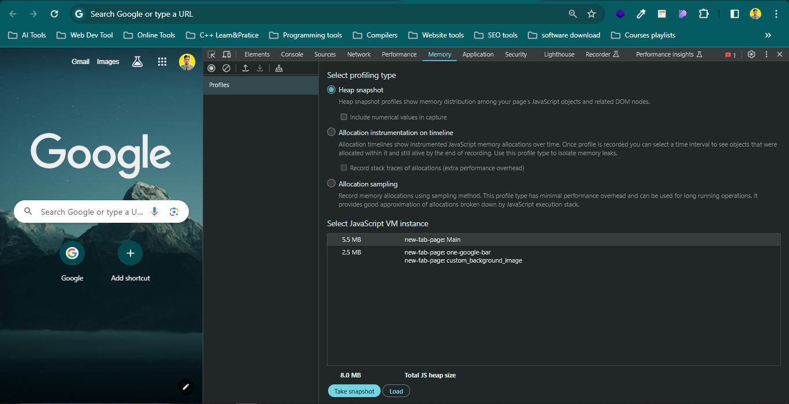

Variable Address In Browser Dev Tool
Steps
- Get to Memory tab of Browser

- Then take snapshot
- And Search the right context of your Variables
Note :
-
In premitive datatypes Variable with same values from satrt have same
memory location (like null undefine etc)